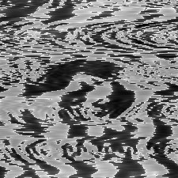
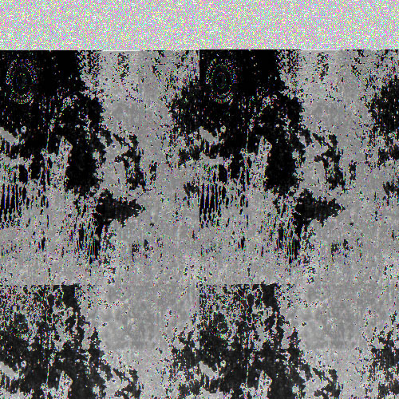
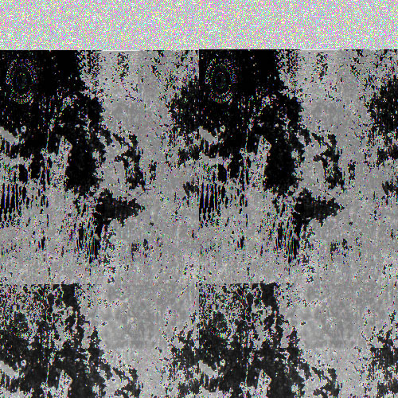

These were made using Audacity and TextEdit. Each image is an album cover from artists I've been listening to lately. The album covers I chose are Remi Wolf's "Im Allergic To Dogs!", Tyler the Creator's "Flowerboy", and Rex Orange County's single, "Sunflower". Both the Remi Wolf and Rex Orange County glitch pieces were made using audacity. Tyler The Creator's cover was glitched using Text Edit. I inserted some lyrics from his song "See You Again".
 
